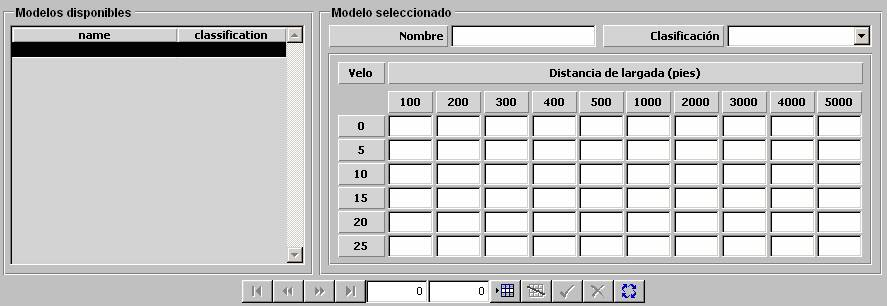

Cota según Largada

La cota de profundidad alcanzada por sonares VDS o TAS y productores de ruidos al ser desplegados se modela mediante esta tabla en la que se especifica la cota alcanzada según la largada y la velocidad de la unidad. Se consideran los siguientes intervalos de largada y velocidad de la unidad propia:
Distancia de largada (pies): 100, 200, 300, 400, 500, 1000, 2000, 3000, 4000, 5000.
Velocidad (nudos): 0, 5, 10, 15, 20, 25
Descripción de los parámetros:
Cota: Cota de profundidad según distancia de largada y velocidad de la unidad.
Unidades: pies
Rango: 0 - 9999